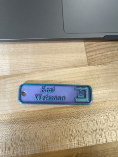
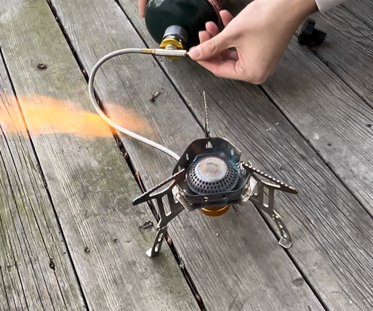
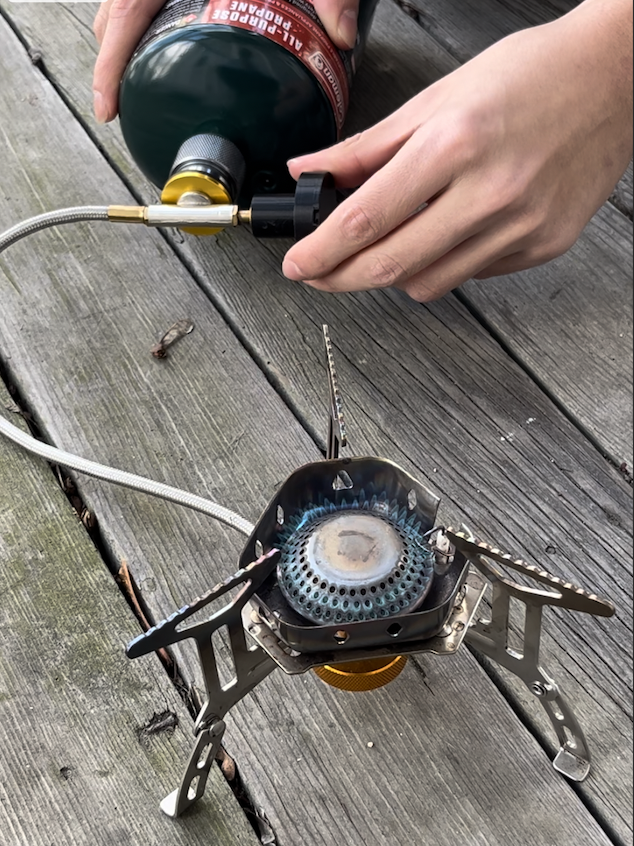

Welcome to my portfolio
Student - Tinkerer - Person
Student - Tinkerer - Person


Hi my name is Etai and this is the website where I will be posting all of my projects for ENGR11A | Introduction to Design Methodology
You can create your own custom avatar for the masthead, change the icon in the dividers, and add your email address to the contact form to make it fully functional!
This Name tag was the first thing I ever 3D printed, First I downloaded and configured the Prusa Slicer Configured it to the Prusa mini + shaper, and Skimmed through the Prusa handbook. Next, I downloaded the keychain name tag file as an STL file, then imported it to the slicer app and edited it to Have my first and last name and set the infill to 20% I Exported the Gcode file to a flash drive as a 3MF file which takes up less storage but can contain specific 3D printer settings. Rainbow filament was loaded into the Prusa Printed and the first half of the key chain was printed Next, I ejected the rainbow filament and loaded the psychedelic silk filaments. Then the print was completed in the psychedelic silk filament colors, the entire print including the filament swap took approximately 40 min.
The Name Tag printed almost flawlessly with only minor stringing leaving small bits of plastic all over the printed model. This was likely due to PLA oozing out of the nozzle while the extruder was moving to a new location on the print leaving strings of PLA between unrelated points. I later found out on "simplify3d" that this can be prevented by enabling "retraction" which causes the PLA to be retracted into the nozzle before moving to print in a new location.
The "3D printer test" was my second ever print, it was found on Thingiverse and printed at the end of class the first class.

The first time I printed the "3D printer test" at 50% scale and 25% infill, it took 45 min. There were multiple issues with this print, significant stringing on the overhangs, pillars were too thin so they snapped easily, and the circles had gaps in them. This stringing could have been prevented by enabling "retraction", I suspect that the gaps in the circles and the overly thin pillars are due to the scaling down of the print.

Because of all of the flaws in the first "3D Printer test" that I believed to be due to the scaling down of the model, I decided to print my second attempt at 100% scale. When I printed the "3D Printer test" at 100% scale it experienced a significant Layer shift although it did not have any stringing. According to simplify3d, this layer shift was likely caused by the printer being bumped or nudged while it was printing. Not sure how this can be prevented other than closely monitoring the print.

Above is a comparison between my print of the "3D Printer test" and one printed by Chang Huang both at 100% scale. The effects of the layer shift on my model are clear in this side-by-side comparison, but it is noteworthy that the overhangs on the layer-shifted model came out relatively okay in comparison to the rest of the features.

For my first endeavor using TinkerCAD to remix two pre-existing STL files I decided to attempt a relatively straightforward remix. My goal was to replace the head of an articulating octopus with Shrek's Head.


To achieve this goal I started by searching "Thangs" for an articulating Octopus as well as a bust of Shrek. The screenshots of the files I found and decided on are posted above. After deciding what STL files I wanted to remix,I downloaded them and imported them into TinkerCAD.

After importing both STL files to TinkerCAD I utilized shapes such as cubes and cylinders and the hole function to delete the top of the octopus's head and everything below the neck of the Shrek bust. Next, I placed the head of the Shrek bust on the headless octopus body. Finally, I had to make these two shapes one; I did this by selecting both the body of the octopus and Shek's Head and pressing the group button. After making the Shroctopus a group I exported it as an STL file.


TinkerCAD was my first introduction to CAD software as I had never done any CAD before. I found it to be very intuitive, allowing me to go from a sketch of Shroctopus to an STL file of the Shroctopus in less than an hour. Although the intuitive and simplistic nature of TinkerCAD proved to have limitations, specifically in small and delicate alterations. I found it nearly impossible to remove the residual head materials of the octopus at and below its body height without altering its main body. The lower portion of the octopus head which I was unable to remove can be seen in the close-up tinkerCAD screenshot above.

The final step of making the Shroctopus from sketch to print was importing the Shroctopus STL created in TinkerCAD to the Prusa Slicer app and setting my print settings(15% infill, 7mm brim,75%scale, etc.). Next, I exported the 3D printer instructions(Gcode) as a 3Mf file onto a flash drive and then inserted the flash drive into a Prusa 3D printer making sure to watch the first layer print.

Above is the final Shroctopus print still on its printing plate. It was printed on a Prusa named Anton Ego, the print was almost flawless with the small features such as ears and tentacles having almost no deformities although there was very minor stringing around the ears. I was still unsatisfied with the octopus head remnants on the back of the Shroctopus visible in the print close-up.

Above is a close-up of the Shroctopus after it lost some tentacles from being played with. I belive that this fragility is due to the Shroctopus being scaled down in the slicer as it broke at the articulating joints of its tentacles. In the future, I would print the Shroctopus at full scale(strengthening the articulating joints) and enable retraction to prevent stringing.

After finding my footing in TinkerCAD I Decided to use Fusion 360 to design something from scratch that could improve my life. Above is the inspiration for my need-driven design, a small camping stove, whose knob for adjusting flame high is very small(1cm) causing minor adjustments of the knob to result in drastic changes in flame height. Out of a need for more accurate flame height adjustment, I sought to design an extender that fits over the existing adjustment knob and increases the diameter of the knob allowing for finer flame height adjustments.

My first step in turning this design into a reality was sketching out the extender I saw in my mind's eye. My initial sketch included dimensions, all of which would inevitably change except the diameter of the center hole(1cm) where the existing knob is intended to fit

Above is a screenshot of the first iteration of the camping stove knob extender. I made this first iteration by drawing a circle with a diameter of 5 cm and then extruding it 1cm up to make a large cylinder next, I added another cylinder on top of the base cylinder, this cylinder was 25mm in diameter and 2 cm in height. To make the second cylinder the shaft which the existing knob fits into, I created another cylinder 1 cm in diameter and 1.5cm tall and turned it into a hole. Next, I design a small wedge that would denote which direction to turn the knob to increase or decrease flame height. I did this by drawing two arcs that met at one point(direction to decrease flame height) and a line connecting the two opposite ends of the arc's making a curved wedge with the wider end denoting the direction the knob should be turned to increase flame height. Then I extruded(-4mm) the shape as a hole into the base cylinder. Once I was satisfied with my design I saved my file and exported it as an STL.

Next I imported the STL of the stove knob extender into the Prusa slicer app to prepare for printing. Since this design was not made for any physically intensive purposes it was printed with only 15% infill and no brim or supports.

After exporting the Gcode of the extender design to a flash drive it was then printed on a Prusa Mini. The first prototype iteration was printed in rainbow PLA, It fits snugly over the existing stove adjustment knob allowing for the extender to turn and the actual knob turns nicely with it. Although I found the 5cm diameter of the extender knob to be a bit excessive and so I went back to the drawing board.
My new goals were to decrease the diameter of the base cylinder as well as the width of the top cylinder shaft walls while maintaining the diameter of the shaft and the directionality indicating wedge. With these goals in mind I went back and altered my first iteration starting by changing the diameter of the central cylinder to 35mm and the wall width of the shaft from 15mm to 8mm. The most difficult aspect of these changes was rearranging the key points of the wedge to ensure that it fit nicely in the new diameter of the base cylinder. After achieving all of the goals I set out for the second design iteration and saved it as an STL file.

After saving the second iteration of the extender design as an STL I imported it into the Prusa slicer. I kept all of the print settings the same as it came out flawlessly the first time.

In preparation for the second print I performed a first-layer calibration because I did recognize some separation in between the filament in the first layer of the first iteration. The second iteration print came out with no significant errors. This print fits nicely snug over the existing adjuster knob and functioned just as intended. The final product can be seen in action below.
Before
After

In this project we worked in groups of two with people we had not worked with before, the goal of this project was to assemble and solder together an electronics kit Then design 2 enclosures for the kit on Fusion 360. One enclosure was to be 3D printed and another was to be laser cut with three key features, the LED lights on the electronic kit needed to be visible, the microphone needed to be able to hear, and the battery pack needed to be accessible. My partner, Misha, and I opted to solder our kits separately. This was my first attempt at soldering so the first few connections I soldered (top left corner) were teardrop shaped and on the larger side but my later connections were more conservative and consistently shaped (bottom right corner)

Once I completed my kit I put batteries in its battery pack and made some noise, the LEDs on the kit lit up telling me that my connections were functional. At this point, I began referring to the kit as the "sound-o-meter" for obvious reasons.

Now that the kit was functional I proceeded to measure all of the relevant dimensions of the kit using digital calipers and then input all of the data onto a table I made in a shared Google doc with Misha

Using the recorded dimensions we sketched a basic design for the sound meter circuit and battery case.


Based on our sketches and dimensions we went into Fusion 360 and designed two separate enclosures for the battery pack and circuit board. the design of these enclosures utilized a sliding lid making the batteries and circuit easily accessible.


Once we completed our designs in fusion, they were exported as STL files and imported to the Prusa slicer app. The enclosures were printed in PLA using the 0.20mm structural print settings at 15% infill. It took the battery enclosure 1 hour and 14 minutes to print and the circuit enclosure took 1 hour and 1 minute using the same print settings.


We had some issues with our circuit enclosure, we did not leave enough space in the channels that the lid sild through. When we first tested the fit of the lid to the box it became stuck and snapped the channels it was supposed to be sliding through due to a significant amount of stringing and excess filament accumulating in the channel. We went back to the drawing board and added another 1mm in height to the channel, in addition to this we used a file to clean out the channels after reprinting the improved enclosure.


The battery enclosure printed out quite successfully on its first attempt with the batter connectors fitting snugly inside and the sliding lid function ing properly after we shaved away any stringing and overhangs present in the channels that the lid slid through.

V1 of the laser cut box was my first attempt at laser cutting, as I had no prior experience I started by watching and following along with the YouTube tutorial "Finger Joint Box for Laser Cutting Fusion 360 Tutorial" making a basic finger joint box using user parameters to constrain features making the dimensions of the box easily modifiable.


I then turned the design I made in fusion into 2D DFX files that I uploaded to Light Burn and used to laser cuter to cut out the box. The laser cut was a success and the box was assembled.

Now that I had a basic understanding of the laser cutting work flow from design to cut I utilized the parameters and design from the 3D enclosures I made to design a laser cut enclosure. I adapted the design by adding an additional 7mm to the length and width parameters to allow room for finger joints, I designed the laser-cut enclosure for the circuit above and Misha designed the enclosure for the battery case.

Both designs were subsequently turned into DFX files and uploaded to Light Burn as seen above.

Next we assembled the enclosures using hot glue to secure the finger joints, the lids of these enclosures were not sealed to allow the Sound-o-Meter and its batteries to be accessible. We were very satisfied with these enclosures as they hit all of the key parameters given for their design. We could access the batteries, see all of the LED lights, and the microphone could hear us as indicated by the lights fluctuating when we spoke.

I started this project off by registering on the E-nable hub and reviewing then downloading all of the STL files needed to print and build a right-handed UnLimbited Phoenix V3 Hand.

In this project we were given an introduction to the Raised3D printers, I opened the IdeaMaker slicer app and imported all of the hand parts to it scaling all of them up to 150%. This printer and its dual extruder technology were brand new to me since I found out it had two extruders I decided to have half of the components printed by the right extruder and half by the left believing it would cut print time in half. This caused some issues while slicing as I was unaware that the two extruders moved in unison meaning that it could only print two identical objects at the same time meaning I could not print different hand parts using both extruders.
With this lesson learned about printing on a dual extruder printer I went back to the IdeaMaker slicer and set all of the components to be printed by the left extruder resulting in the successful print seen above. It was estimated that the print would take 33 hours and 21 minutes on the Rasied3D printer.


The gcode was exported from IdeaMaker onto a flash drive and input onto a raised 3D printer, but here is where we ran into some technical difficulties. The printer screen indicated that the print would take some 339 hours despite the slicer only saying it would take 33 hours. After consulting with Professor Roy on what to do next it was decided that we would let this "forever print" proceed. While also restarting the print on another raised 3D printer. The forever print is still ongoing but the second attempt also failed in quite a spectacular manner with a severe layer shift occurring early in its printing process.


In the end we opted to use the Prusa min printers that we were familiar with to get all of the components we needed for this project printed in a timely manner.

Once we had all of the components of the E-nable Phoenix V3 hand-printed and accounted for we pivoted our attention to its assembly. We started familiarizing ourselves with the process by watching a "tutorial video" on how to assemble the hand to construct the hand.
I started this project by Soldering the sound-meters electronics kit. This was my first attempt at soldering so the first few connections I soldered (top left corner) were teardrop shaped and on the larger side but my later connections were more conservative and consistently shaped (bottom right corner)
The Name Tag printed almost flawlessly with only minor stringing leaving small bits of plastic all over the printed model. This was likely due to PLA oozing out of the nozzle while the extruder was moving to a new location on the print leaving strings of PLA between unrelated points. I later found out on "simplify3d" that this can be prevented by enabling "retraction" which causes the PLA to be retracted into the nozzle before moving to print in a new location.